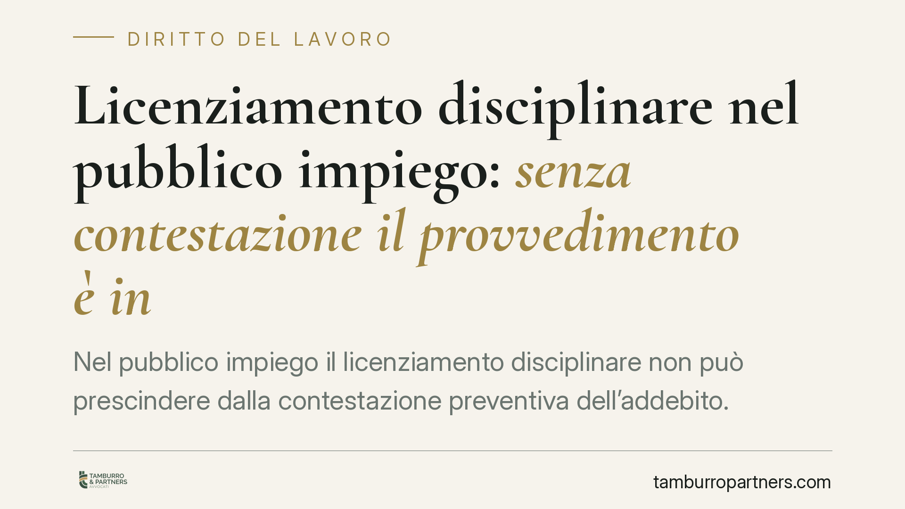

Licenziamento disciplinare nel pubblico impiego: senza contestazione il provvedimento è invalido
Nel pubblico impiego il licenziamento disciplinare non può prescindere dalla contestazione preventiva dell'addebito. Secondo l'orientamento della Sezione Lavoro della Cassazione, l'omessa contestazione vizia il procedimento in modo non sanabile dalla conoscenza altrimenti acquisita dei fatti. Vediamo perché conta e cosa può fare il dipendente che riceva un provvedimento espulsivo privo di questo passaggio.

Il punto
La contestazione dell'addebito è l'atto con cui l'amministrazione comunica al dipendente i fatti specifici per i quali intende avviare l'azione disciplinare. Non è una formalità: è la condizione che consente al lavoratore di difendersi prima che la sanzione venga irrogata.
La Sezione Lavoro della Corte di Cassazione ha più volte ribadito che, nel pubblico impiego contrattualizzato, la contestazione è un passaggio indefettibile. Quando manca, il vizio del procedimento non si sana per il fatto che il dipendente fosse comunque a conoscenza degli addebiti attraverso altri atti (ad esempio un esposto, una segnalazione o un procedimento penale parallelo).
La ratio è semplice: una cosa è conoscere i fatti, altra è essere formalmente chiamati a rispondere nel contraddittorio disciplinare. Senza contestazione, il diritto di difesa resta sulla carta.
Inquadramento normativo
Il procedimento disciplinare nel pubblico impiego è disciplinato in modo speciale dall'art. 55-bis del D.lgs. 165/2001 (Testo unico sul pubblico impiego). Questa norma scandisce le fasi obbligatorie: contestazione dell'addebito, termine a difesa, audizione del dipendente, conclusione entro i termini previsti.
Il rapporto con l'art. 7 dello Statuto dei lavoratori (L. 300/1970) va chiarito. Le garanzie procedimentali dello Statuto hanno ispirato la disciplina del settore pubblico, ma nel pubblico impiego trova applicazione la regolamentazione speciale dell'art. 55-bis, che su diversi aspetti sostituisce o deroga alla disciplina generale. Non è quindi corretto dare per scontata l'applicazione automatica dell'art. 7: il riferimento operativo primario è l'art. 55-bis.
Quanto alle conseguenze del vizio, occorre prudenza. L'omessa contestazione incide sulla validità del licenziamento, ma il concreto rimedio esperibile dal dipendente va individuato alla luce del regime sanzionatorio del settore pubblico, ricostruito dalla giurisprudenza a partire dagli artt. 55-bis e 63 del D.lgs. 165/2001 e dal rinvio all'art. 18 dello Statuto dei lavoratori nella modulazione elaborata per il lavoro pubblico. La tutela può andare dalla reintegrazione al ristoro economico a seconda della natura e della gravità del vizio: non esiste un automatismo valido in ogni caso.
Vizio del procedimento e merito dell'addebito
Un chiarimento utile. Il vizio procedimentale — qui, la mancata contestazione — opera su un piano diverso rispetto alla fondatezza dei fatti addebitati.
Un dipendente può aver effettivamente commesso l'infrazione e, ciononostante, vedersi annullare il licenziamento per il solo fatto che l'amministrazione non ha rispettato il procedimento. Non è un paradosso: il legislatore ha scelto di presidiare il metodo, perché è nel metodo che si realizza il diritto di difesa.
Questo significa anche l'opposto: contestare con successo il vizio procedimentale non equivale a un giudizio di innocenza nel merito. Sono due questioni distinte.
Implicazioni pratiche
Per il dipendente pubblico che riceva un licenziamento disciplinare, la prima verifica non riguarda il merito dell'accusa, ma la regolarità del procedimento. La presenza — e la correttezza — della contestazione dell'addebito è il primo filtro.
Per l'amministrazione, il messaggio è altrettanto netto: la convinzione che il dipendente "sapesse già tutto" non autorizza a saltare la contestazione formale. Il risparmio di un passaggio procedurale può tradursi nell'invalidità dell'intero provvedimento espulsivo.
Attenzione anche ai termini: l'art. 55-bis fissa scadenze precise per avvio e conclusione del procedimento. Il loro mancato rispetto può costituire un ulteriore profilo di invalidità, autonomo rispetto alla contestazione.
Cosa fare in concreto
- Recuperate tutti gli atti del procedimento disciplinare: lettera di contestazione, verbali di audizione, provvedimento finale e relative date.
- Verificate la presenza della contestazione preventiva e la sua specificità: deve indicare fatti precisi, non generici richiami.
- Controllate i termini di avvio e conclusione previsti dall'art. 55-bis: un ritardo può rilevare autonomamente.
- Non attendete: l'impugnazione del licenziamento è soggetta a termini di decadenza. Agite tempestivamente.
- Fate valutare il caso a un professionista prima di qualsiasi iniziativa: la qualificazione del vizio e l'individuazione del rimedio corretto richiedono un'analisi tecnica dei singoli atti.
Conclusione
Nel pubblico impiego la contestazione dell'addebito non è negoziabile. La sua assenza colpisce la validità del licenziamento a prescindere dal merito dei fatti. Resta però necessario distinguere il piano del vizio da quello della sanzione applicabile, che va calibrato caso per caso.
---
*Contributo informativo a cura di Tamburro & Partners — Avv. Giuseppe Tamburro. Non costituisce parere legale.*
Ogni storia di lavoro ha i suoi tempi.
Se gestisci HR e vuoi un confronto su contenzioso, ispezioni o licenziamenti, scrivi allo studio. Ti rispondiamo entro un giorno lavorativo.